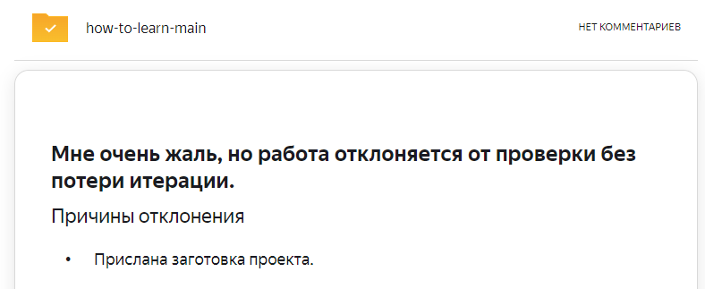
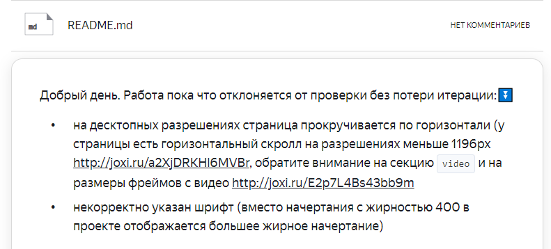
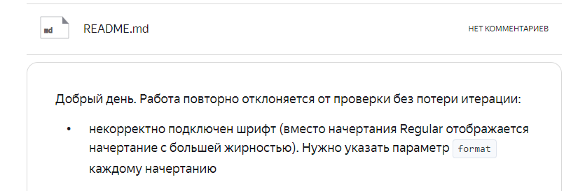
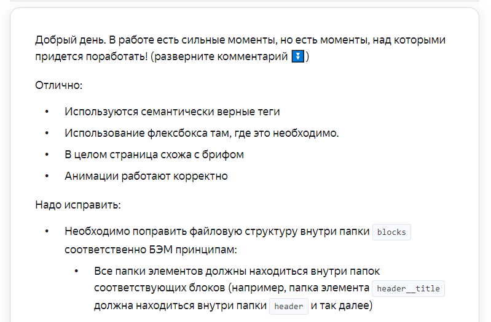
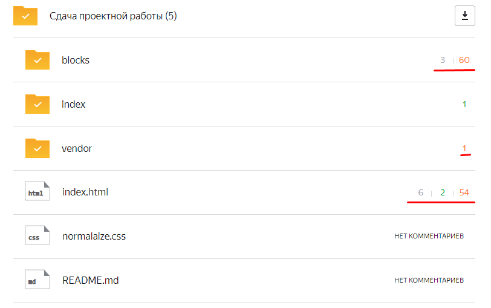
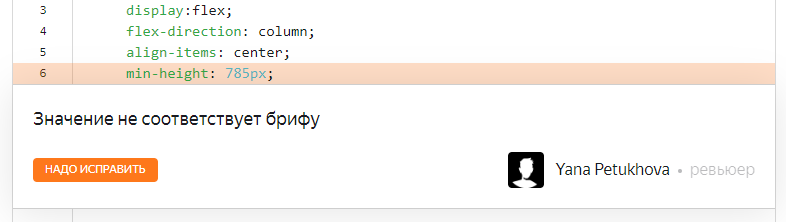
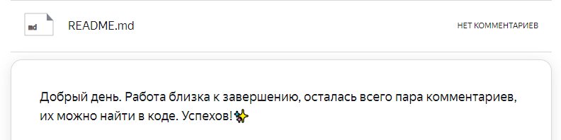
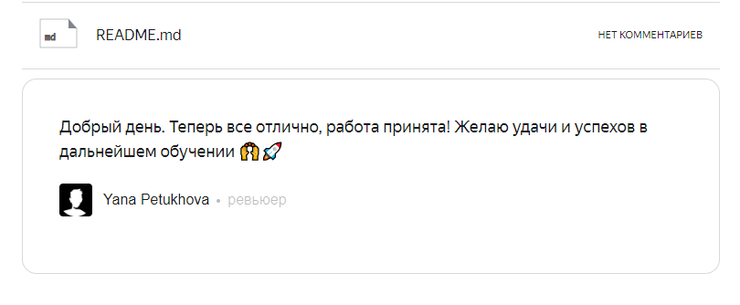
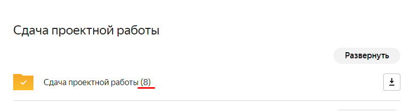

Привет! Эта страница призвана пояснить некоторые моменты, связанные с код-ревью. Ниже приведены некоторые ошибки (мои ¯\_(ツ)_/¯ 😎), ответы ревьюверов а так же просто рекомендации
Если при настройке формы отправки проекта на ревью вы случайно отправите пустую заготовку, то итерация не сгорит, а вы получите такой вот ответ:
Для каждого проекта у вас будет свой чек-лист. Сверяйтесь с ним каждый раз в обязательном порядке, это поможет избежать лишней работы по исправлению. так же в каждом чек-листе есть специальный блок, описывающий при каких обстоятельствах ваша работа будет отклонена от проверки. Не свериться с ними, отправить на ревью, прождать на нервах сутки, а потом получить такой ответ - обидно)
Нет, серьезно. Проверяйте внимательно, потому что после того как проект вернули без проверки, сгорая от негодования на нерадивого ревьювера, вы отправляете его на проверку снова. Снова ждете. И получаете в ответ:
Итак, чек-лист пройден, работа пришла с проверки. Можно выдохнуть 🙃 Вот так будет выглядеть неплохой ответ. Общий комментарий, как правило достаточно объемен, в нем часто указывают как все хорошо и как все плохо (😅) Сильные стороны работы, а так же комментарии "надо исправить", относящиеся ко всему проекту в целом
В самой папке проекта будут оставлены комментарии непосредственно к коду. Серые «можно лучше» — не обязательны к исправлению (по моему мнению — обязательны, иначе зачем это всё 😉) Зеленые «отлично» — там обычно ревьюверский сахар о том, какие вы молодцы. И наконец, красные «надо исправить» — они ВСЕ обязательны к исправлению. Не пугайтесь большого кол-ва ошибок — это совершенно нормально. Не сложно посчитать, что у меня их было 115 (115 Карл! 🙈)
Открываем папки проекта напротив циферок, и попадем в сам код с комментариями. Выглядят они следующим образом: Выделенная строка с кодом, к которому комментарий написан. В нем указано что именно не так, и иногда рекомендации к испралению. Как справились - кликайте по кнопке "надо исправить" и переходите к следующему. Так потихоньку все и будет готово 🤓
Я уже писал о том, что важно исправлять все замечания "надо исправить". Не стоит надеяться на то, что ревьювер что-то пропустит или не заметит (это вообще не так работает 🧐) Потому что если считать себя самым умным (да, я пытался сломать систему 😏), то с ревью придет вот такой вот ответ:
Ура! Все ошибки исправлены, все отправлено на проверку. Две банки валерьянки валяются уже под столом - пришел долгожданный ответ:
Итого, на сдачу первой работы у меня ушло 8 попыток. ВОСЕМЬ 😐. Многие случились из-за моей невнимательности, другие из-за того что я был в легком ужасе от того что не совсем понимаю что делаю. Со временем понимание пришло. Навыки развились, скиллы прокачались - и вот я уже написал вам эту страничку за 15 минут (я больше смайлики выбирал сидел 😂). Все получиться, что непонятно - станет понятнее со временем. Не опускайте руки, и идите до конца 😎
